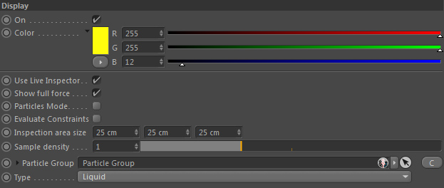
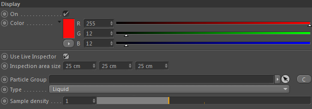

Display (Live Inspector)
The live inspector is a display feature that allows to preview the result of a node live in the editor view of Cinema 4D.
Forces and Constraints are both using the live inspector (see below images respectively) helping tremendously with the setup.

Live Inspector in a GF/DF/PF

Live Inspector in a CS/PCS
On
De/activates the editor display of this node completely.
Color
Define the editor display color of this node's live inspector preview.
Use Live Inspector
Activate the Live Inspector which will show you a live preview of the generated node result (if supported by the node).
This is a tremendous help to preview individual results.
Show full force
Only available in Forces
If checked the length of the force preview line will show the full length of the force.
Otherwise the line will have unit length (therefore will only display the direction of the force).
Evaluate Constraints
Activate if the preview shall evaluate any linked constraints.
May reduce performance though (depending on node complexity).
Inspection area size
The live inspector shows the node's result inside of a box. You can define the dimensions of this box here.
Sample density
Only available in grid based or dual nodes
Inside the live inspector preview box, directional lines show the force's result.
Here you can in/decrease the samples count (this is the distance between samples, so more samples means lower Sample density values).
Particles Mode
Only available in Particle Forces (PF::) or Dual Forces (DF::)
If activated the Live Inspector pretents that the Dual Force is a Particle Force.
And therefore shows the result preview for particles (based on Particle Group and Type set).
Otherwise it will display the result as if it was a Grid Force (so using the Sampling density.
Particle Group
Only available in particle based or dual nodes.
Defines the Particle Group to preview the result for.
Type
Only available in particle based or dual nodes.
Defines the Particle Group's particle (subgroup) type to preview the result for.